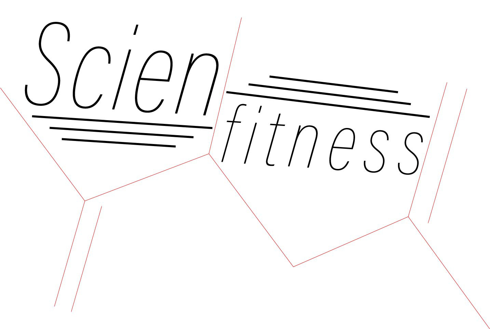

Software Development and Machine learning
This project was designed to be useful tool for the diabetic population. It was mainly focused on retrieveing health, motion, and glucose data from participants to implement a machine learning algorithm that notifies ths user of instances of unusually low or high blood glucose levels, and associates them to the activities they normally do to ensure the users safety.
I started as a Software Developer in this team. This is has been one of my favorite projects because as I started my role in this lab, I did not know how to code with Swift, and I was not a great software developer. I was however, extremely passionate about this topic and hungry to learn and be able to help in the lab so I spent hours upon hours teaching myself Swift, reading online, and debugging until I was finally able to consider myself a competant developer.
